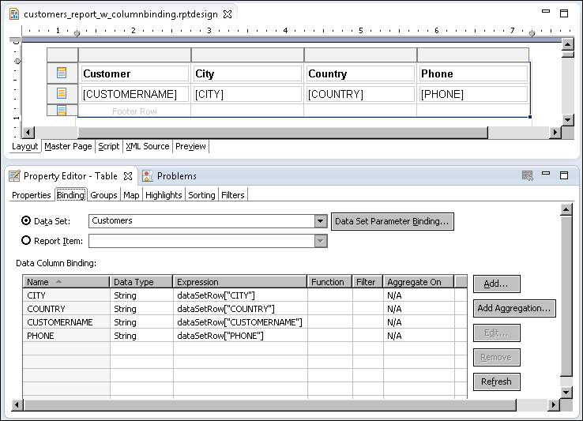

The data set or data sets that you create provide the data you want to use in a report. Before you can use or display this data in a report, you must first create the necessary data bindings. As the first tutorial demonstrated, to display the data in a report, you simply drag data set fields from Data Explorer to a table in the layout editor. Each time you insert a data set field, BIRT creates a data binding.
This data binding, called a column binding, defines an expression that specifies what data to display. The column binding also defines a name that report elements use to access data. To view the column bindings that BIRT creates for each data set field that you place in a table, select the table, then, in Property Editor, choose the Binding tab. Figure 3-1 shows an example of column bindings created for each data set field in a table.
